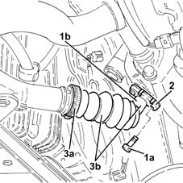

1048B14 air delivery pipe between turbo charger and heat exchanger - replace
- Path
- Procedures > 10 ENGINE > 1048 ENGINE AIR SUPPLY CIRCUIT > 1048B pressure air circuit > 1048B14 air delivery pipe between turbo charger and heat exchanger - replace
- Kind
- repair procedure (removal / refitting; the operation number is the code)
- Applies to
- engines: 1.3 JTD; all production periods
- Interactive page
- https://sloeber94.github.io/elrnDB-lYpsln/en/#/2429028
Applies to: engines: 1.3 JTD; all production periods
 Removing
Removing
 Refitting
RefittingPosition the vehicle on the ramp.
Proceed with removal .
1. Undo the bolts (1a) and disconnect the air supply hose between the turbocharger and the heat exchanger (1b), turbocharger side.
2. Remove the gasket.
3. Loosen the band (3a) and remove the air supply duct between turbocharger and heat exchanger (3b).

Applies to: engines: 1.3 JTD; all production periods
Refitting
RemovingPlace the air supply hose between the turbocharger and the intercooler, intercooler side back in its housing, connect it and tighten the band.
Connect the air supply hose between the turbocharger and the heat exchanger, complete with gasket, turbocharger side and tighten the bolts.
Proceed with refitting .
Remove the car from the ramps.